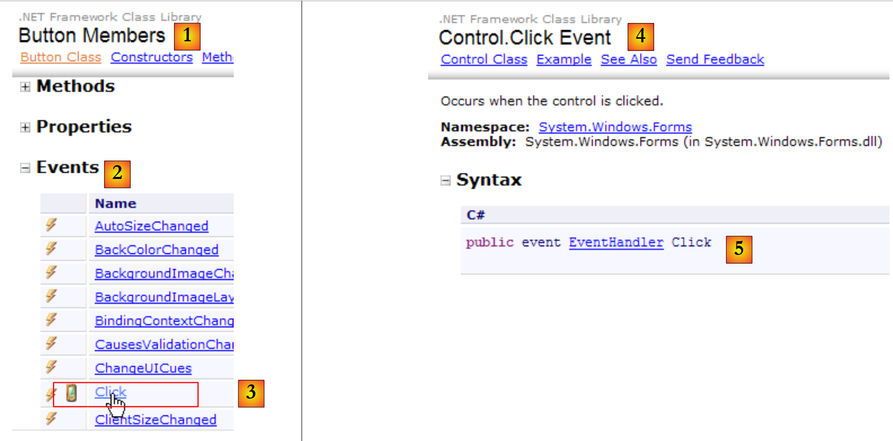

8. Eventos de usuario
En el capítulo anterior abordamos el concepto de eventos vinculados a los componentes de un formulario. Ahora veremos cómo crear eventos en nuestras propias clases.
8.1. Objetos delegados predefinidos
El concepto de objeto delegate ya se mencionó en el capítulo anterior, pero en aquel momento solo se trató de forma superficial. Cuando analizamos cómo se declaraban los controladores de eventos de los componentes de un formulario, nos encontramos con un código similar al siguiente:
this.buttonAfficher.Click += new System.EventHandler(this.buttonAfficher_Click);
donde buttonAfficher era un componente de tipo [Button]. Esta clase tiene un campo Click definido de la siguiente manera:
 |
- [1]: la clase [Button]
- [2]: sus eventos
- [3,4]: el evento Click
- [5]: la declaración del evento [Control.Click] [4].
- EventHandler es un prototipo (un modelo) de método denominado delegado.
- event es una palabra clave que restringe las funcionalidades de delegate y EventHandler: un objeto delegate tiene más funcionalidades que un objeto event.
El delegate EventHandler se define de la siguiente manera:
 |
El delegate EventHandler designa un modelo de método:
- cuyo primer parámetro es un tipo Object
- cuyo segundo parámetro es de tipo EventArgs
- que no devuelve ningún resultado
Un método que se ajuste al modelo definido por EventHandler podría ser el siguiente:
private void buttonAfficher_Click(object sender, EventArgs e);
Para crear un objeto de tipo EventHandler, se procede de la siguiente manera:
EventHandler evtHandler=new EventHandler(méthode correspondant au prototype défini par le type EventHandler);
De este modo, se podrá escribir:
Una variable de tipo delegate es, en realidad, una lista de referencias a métodos que se corresponden con el modelo delegate. Para añadir un nuevo método M a la variable evtHandler anterior, se utiliza la sintaxis:
La notación += se puede utilizar aunque evtHandler sea una lista vacía.
La instrucción:
this.buttonAfficher.Click += new System.EventHandler(this.buttonAfficher_Click);
Añade un método de tipo EventHandler a la lista de métodos del evento buttonAfficher.Click. Cuando se produce el evento Click en el componente buttonAfficher, VB ejecuta la instrucción:
donde:
- source es el componente de tipo object que origina el evento
- evt, de tipo EventArgs, y no contiene información
Todos los métodos de firma void M(object,EventArgs) que se han asociado al evento Click mediante:
this.buttonAfficher.Click += new System.EventHandler(M);
se invocarán con los parámetros (source, evt) transmitidos por VB.
8.2. Definir objetos delegados
La instrucción
public delegate int Opération(int n1, int n2);
define un tipo denominado Opération que representa un prototipo de función que acepta dos enteros y devuelve un entero. Es la palabra clave delegate la que convierte a Opération en una definición de prototipo de función.
Una variable op de tipo Opération tendrá la función de almacenar una lista de funciones que se correspondan con el prototipo Opération:
El registro de un método fi en la variable op se realiza mediante op=new Operación(fi) o, más sencillamente, mediante op=fi.. Para añadir un método fj a la lista de funciones ya registradas, se escribe op+= fj. Para eliminar un método fk ya registrado, se escribe op-=fk. Si en nuestro ejemplo escribimos n=op(n1,n2), se ejecutarán todos los métodos registrados en la variable op con los parámetros n1 y n2. El resultado n obtenido será el del último método ejecutado. No es posible obtener los resultados generados por todos los métodos. Por este motivo, si se almacena una lista de métodos en una función delegada, estos suelen devolver un resultado de tipo void.
Consideremos el siguiente ejemplo:
using System;
namespace Chap6 {
class Class1 {
// definición de un prototipo de función
// acepta dos enteros como parámetros y devuelve un entero
public delegate int Opération(int n1, int n2);
// dos métodos de instancia correspondientes al prototipo
public int Ajouter(int n1, int n2) {
Console.WriteLine("Ajouter(" + n1 + "," + n2 + ")");
return n1 + n2;
}//añadir
public int Soustraire(int n1, int n2) {
Console.WriteLine("Soustraire(" + n1 + "," + n2 + ")");
return n1 - n2;
}//restar
//: un método estático correspondiente al prototipo
public static int Augmenter(int n1, int n2) {
Console.WriteLine("Augmenter(" + n1 + "," + n2 + ")");
return n1 + 2 * n2;
}//aumentar
static void Main(string[] args) {
// se define un objeto de tipo «operación» para registrar funciones en él
// se registra la función estática «aumentar»
Opération op = Augmenter;
// se ejecuta el delegado
int n = op(4, 7);
Console.WriteLine("n=" + n);
// creación de un objeto c1 de tipo class1
Class1 c1 = new Class1();
// se registra en el delegado el método «añadir» de c1
op = c1.Ajouter;
// ejecución del objeto delegado
n = op(2, 3);
Console.WriteLine("n=" + n);
// se registra en el delegado el método «restar» de c1
op = c1.Soustraire;
n = op(2, 3);
Console.WriteLine("n=" + n);
//: registro de dos funciones en el delegado
op = c1.Ajouter;
op += c1.Soustraire;
// ejecución del objeto delegado
op(0, 0);
// se elimina una función del delegado
op -= c1.Soustraire;
// se ejecuta el delegado
op(1, 1);
}
}
}
- línea 3: define una clase Class1.
- línea 6: definición de delegate Opération: un prototipo de métodos que aceptan dos parámetros de tipo int y devuelven un resultado de tipo int
- líneas 9-12: el método de instancia Ajouter tiene la firma del delegado Opération.
- líneas 14-17: el método de instancia Soustraire tiene la firma del delegado Opération.
- líneas 20-23: el método de clase Augmenter tiene la firma del delegado Opération.
- línea 25: se ejecuta el método Main
- línea 20: la variable op es de tipo delegado Operación. Contendrá una lista de métodos con la firma del tipo delegado Operación. Se le asigna una primera referencia de método, la del método estático Class1.Augmenter.
- línea 31: se ejecuta delegate op: se ejecutarán todos los métodos a los que hace referencia op. Se ejecutarán con los parámetros pasados a delegate y op.. En este caso, solo se ejecutará el método estático Class1.Augmenter.
- línea 35: se crea una instancia c1 de la clase Class1.
- línea 37: el método de instancia c1.Ajouter se asigna al delegado op. Augmenter era un método estático, Ajouter es un método de instancia. Se ha querido demostrar que esto no tiene importancia.
- Línea 39: se ejecuta delegate op: el método Ajouter se ejecutará con los parámetros pasados a delegate op.
- línea 42: se repite el mismo proceso con el método de instancia Soustraire.
- Líneas 46-47: se colocan los métodos Ajouter y Soustraire en delegate y op.
- Línea 49: se ejecuta delegate op: los dos métodos Ajouter y Soustraire se ejecutarán con los parámetros pasados a delegate y op.
- línea 51: el método Soustraire se elimina de delegate y op.
- línea 53: se ejecuta el delegate op: se va a ejecutar el método restante Ajouter.
Los resultados de la ejecución son los siguientes:
8.3. ¿Delegados o interfaces?
Los conceptos de delegates e interfaces pueden parecer bastante similares y cabe preguntarse cuáles son exactamente las diferencias entre ambos. Tomemos el siguiente ejemplo, similar a uno ya estudiado:
using System;
namespace Chap6 {
class Program1 {
// definición de un prototipo de función
// acepta dos enteros como parámetros y devuelve un entero
public delegate int Opération(int n1, int n2);
// dos métodos de instancia que se corresponden con el prototipo
public static int Ajouter(int n1, int n2) {
Console.WriteLine("Ajouter(" + n1 + "," + n2 + ")");
return n1 + n2;
}//añadir
public static int Soustraire(int n1, int n2) {
Console.WriteLine("Soustraire(" + n1 + "," + n2 + ")");
return n1 - n2;
}//restar
// Ejecución de un delegado
public static int Execute(Opération op, int n1, int n2){
return op(n1, n2);
}
static void Main(string[] args) {
// ejecución del delegado «Añadir»
Console.WriteLine(Execute(Ajouter, 2, 3));
// ejecución del delegado Restar
Console.WriteLine(Execute(Soustraire, 2, 3));
// ejecución de un delegado multicast
Opération op = Ajouter;
op += Soustraire;
Console.WriteLine(Execute(op, 2, 3));
// Se elimina una función del delegado
op -= Soustraire;
// ejecución del delegado
Console.WriteLine(Execute(op, 2, 3));
}
}
}
En la línea 20, el método Execute espera una referencia a un objeto del tipo delegado «Opération», definido en la línea 6. Esto permite pasar al método Execute diferentes métodos (líneas 26, 28, 32 y 36). Esta propiedad de polimorfismo también se puede conseguir con una interfaz:
using System;
namespace Chap6 {
// interfaz IOperation
public interface IOperation {
int operation(int n1, int n2);
}
// clase Añadir
public class Ajouter : IOperation {
public int operation(int n1, int n2) {
Console.WriteLine("Ajouter(" + n1 + "," + n2 + ")");
return n1 + n2;
}
}
// clase Restar
public class Soustraire : IOperation {
public int operation(int n1, int n2) {
Console.WriteLine("Soustraire(" + n1 + "," + n2 + ")");
return n1 - n2;
}
}
// clase de prueba
public static class Program2 {
// Ejecución del único método de la interfaz IOperation
public static int Execute(IOperation op, int n1, int n2) {
return op.operation(n1, n2);
}
public static void Main() {
// ejecución del delegado «Sumar»
Console.WriteLine(Execute(new Ajouter(), 2, 3));
// Ejecución del delegado «Restar»
Console.WriteLine(Execute(new Soustraire(), 2, 3));
}
}
}
- líneas 6-8: la interfaz [IOperation] define un método operation.
- líneas 11-16 y 19-24: las clases [Ajouter] y [Soustraire] implementan la interfaz [IOperation].
- líneas 29-31: el método Execute, cuyo primer parámetro es del tipo de la interfaz IOperation. El método Execute recibirá sucesivamente como primer parámetro una instancia de la clase Ajouter y, a continuación, una instancia de la clase Soustraire.
Aquí se aprecia claramente el carácter polimórfico que tenía el parámetro de tipo delegate del ejemplo anterior. Ambos ejemplos muestran, al mismo tiempo, las diferencias entre estos dos conceptos.
Los tipos delegate y interface son intercambiables
- si la interfaz solo tiene un método. De hecho, el tipo delegate es una envoltura para un único método, mientras que la interfaz puede definir varios métodos.
- si no se utiliza el aspecto de multidifusión de delegate. De hecho, este concepto de multidifusión no existe en la interfaz.
Si se cumplen estas dos condiciones, se puede elegir entre las dos firmas siguientes para el método Execute:
int Execute(IOperation op, int n1, int n2)
int Execute(Opération op, int n1, int n2)
La segunda, que utiliza el delegate, puede resultar más flexible de usar. De hecho, en la primera firma, el primer parámetro del método debe implementar la interfaz IOperation. Esto obliga a crear una clase para definir en ella el método que se va a pasar como primer parámetro al método Execute. En la segunda firma, cualquier método existente que tenga la firma correcta sirve. No es necesario realizar ninguna construcción adicional.
8.4. Gestión de eventos
Los objetos delegate pueden utilizarse para definir eventos. Una clase C1 puede definir un evento evt de la siguiente manera:
- se define un tipo delegate dentro o fuera de la clase C1:
- la clase C1 define un campo de tipo delegate Evt:
- cuando una instancia c1 de la clase C1 quiera notificar un evento, ejecutará su delegado Evt1 pasándole los parámetros definidos por el delegado Evt. Todos los métodos registrados en delegate y Evt1 se ejecutarán entonces con estos parámetros. Se puede decir que han sido notificados del evento Evt1.
- Si un objeto c2 que utiliza un objeto c1 desea ser notificado de la ocurrencia del evento Evt1 en el objeto c1, registrará uno de sus métodos, c2.M, en el objeto delegado c1.Evt1 del objeto c1.. De este modo, su método c2.M se ejecutará cada vez que elevento Evt1 se produzca en el objeto c1. También podrá darse de baja cuando ya no desee recibir notificaciones sobre el evento.
- Dado que el objeto delegado c1.Evt1 puede registrar varios métodos, diferentes objetos ci podrán registrarse en el delegado c1.Evt1 para recibir notificaciones del evento Evt1 en c1.
En este escenario, tenemos:
- una clase que notifica un evento
- unas clases a las que se notifica dicho evento. Se dice que se suscriben al evento.
- un tipo delegate que define la firma de los métodos a los que se notificará el evento
El marco .NET define:
- una firma estándar del delegate de un evento
- source: el objeto que ha notificado el evento
- evtInfo: un objeto de tipo EventArgs o derivado que aporta información sobre el evento
- el nombre del delegate debe terminar en EventHandler
- una forma estándar de declarar un evento de tipo MyEventHandler en una clase:
El campo Evt1 es de tipo delegate. La palabra clave event sirve para restringir las operaciones que se pueden realizar sobre él:
- desde fuera de la clase C1, solo son posibles las operaciones += y -=. Esto impide la eliminación (por ejemplo, por error del desarrollador) de los métodos suscritos al evento. Solo se puede suscribirse (+=) o darse de baja (-=) del evento.
- Solo una instancia de tipo C1 puede ejecutar la llamada Evt1(source,evtInfo), que desencadena la ejecución de los métodos suscritos al evento Evt1.
El marco .NET proporciona un método genérico que cumple con la firma de delegate de un evento:
public delegate void EventHandler<TEventArgs>(object source, TEventArgs evtInfo) where TEventArgs : EventArgs
- el delegate EventHandler utiliza el tipo genérico TEventArgs, que es el tipo de su segundo parámetro
- el tipo TEventArgs debe derivarse del tipo EventsArgs (donde TEventArgs: EventArgs)
Con este tipo genérico delegate, la declaración de un evento X en la clase C seguirá el siguiente esquema recomendado:
- definir un tipo XEventArgs derivado de EventArgs para encapsular la información sobre el evento X
- definir en la clase C un evento de tipo EventHandler<XEventArgs>.
- definir en la clase C un método protegido
destinado a «publicar» el evento X a los suscriptores.
Consideremos el siguiente ejemplo:
- una clase Emetteur encapsula una temperatura. Se monitoriza dicha temperatura. Cuando esta temperatura supera un umbral determinado, debe lanzarse un evento. Llamaremos a este evento TemperatureTropHaute. La información sobre este evento se encapsulará en un tipo TemperatureTropHauteEventArgs.
- Una clase Souscripteur se suscribe al evento anterior. Cuando recibe la notificación del evento, muestra un mensaje en la consola.
- Un programa de consola crea un emisor y dos suscriptores. Introduce las temperaturas mediante el teclado y las registra en una instancia de tipo Emetteur. Si esta es demasiado alta, la instancia de tipo Emetteur publica el evento TemperatureTropHaute.
Para cumplir con el método recomendado de gestión de eventos, definimos en primer lugar el tipo TemperatureTropHauteEventArgs para encapsular la información sobre el evento:
using System;
namespace Chap6 {
public class TemperatureTropHauteEventArgs:EventArgs {
// Temperatura en el momento del evento
public decimal Temperature { get; set; }
// fabricantes
public TemperatureTropHauteEventArgs() {
}
public TemperatureTropHauteEventArgs(decimal temperature) {
Temperature = temperature;
}
}
}
- línea 6: la información encapsulada por la clase TemperatureTropHauteEventArgs es la temperatura que provocó el evento TemperatureTropHaute.
La clase Emetteur es la siguiente:
using System;
namespace Chap6 {
public class Emetteur {
static decimal SEUIL = 19;
// temperatura observada
private decimal temperature;
// nombre de la fuente
public string Nom { get; set; }
// evento notificado
public event EventHandler<TemperatureTropHauteEventArgs> TemperatureTropHaute;
// lectura/escritura de temperatura
public decimal Temperature {
get {
return temperature;
}
set {
temperature = value;
if (temperature > SEUIL) {
// se notifica el evento a los abonados
OnTemperatureTropHaute(new TemperatureTropHauteEventArgs(temperature));
}
}
}
// notificación de un evento
protected virtual void OnTemperatureTropHaute(TemperatureTropHauteEventArgs evt) {
// Envío del evento TemperatureTropHaute a los suscriptores
TemperatureTropHaute(this, evt);
}
}
}
- línea 5: el umbral de temperatura a partir del cual se publicará el evento TemperatureTropHaute.
- línea 10: el emisor tiene un nombre para su identificación
- línea 12: el evento TemperatureTropHaute.
- Líneas 15-26: el método get, que devuelve la temperatura, y el método set, que la registra. Es el método set el que publica el evento TemperatureTropHaute si la temperatura que se va a registrar supera el umbral de la línea 5. Este método hace que se publique el evento mediante el método OnTemperatureTropHauteHandler de la línea 29, pasándole como parámetro un objeto TemperatureTropHauteEventArgs en el que se ha registrado la temperatura que ha superado el umbral.
- líneas 29-32: se publica el evento TemperatureTropHaute con el propio emisor como primer parámetro y el objeto TemperatureTropHauteEventArgs recibido como parámetro como segundo parámetro.
La clase Souscripteur, que se suscribirá al evento TemperatureTropHaute, es la siguiente:
using System;
namespace Chap6 {
public class Souscripteur {
// nombre
public string Nom { get; set; }
// administrador del evento TemperatureTropHaute
public void EvtTemperatureTropHaute(object source, TemperatureTropHauteEventArgs e) {
// visualización en la consola del operador
Console.WriteLine("Souscripteur [{0}] : la source [{1}] a signalé une température trop haute : [{2}]", Nom, ((Emetteur)source).Nom, e.Temperature);
}
}
}
- línea 6: cada suscriptor se identifica mediante un nombre.
- líneas 9-12: el método que se asociará al evento TemperatureTropHaute. Tiene la firma de tipo delegate EventHandler<TEventArgs> que debe tener un gestor de eventos. El método muestra en la consola: el nombre del suscriptor que muestra el mensaje, el nombre del emisor que ha notificado el evento y la temperatura que lo ha desencadenado.
- La suscripción al evento TemperatureTropHaute de un objeto Emetteur no se realiza en la clase Souscripteur. La llevará a cabo una clase externa.
El programa [Program.cs] vincula todos estos elementos entre sí:
using System;
namespace Chap6 {
class Program {
static void Main(string[] args) {
// creación de un emisor de eventos
Emetteur e1 = new Emetteur() { Nom = "e" };
// creación de una tabla con 2 suscriptores
Souscripteur[] souscripteurs = new Souscripteur[2];
for (int i = 0; i < souscripteurs.Length; i++) {
// creación de un suscriptor
souscripteurs[i] = new Souscripteur() { Nom = "s" + i };
// se le suscribe al evento TemperatureTropHaute de e1
e1.TemperatureTropHaute += souscripteurs[i].EvtTemperatureTropHaute;
}
// se leen las temperaturas desde el teclado
decimal temperature;
Console.Write("Température (rien pour arrêter) : ");
string saisie = Console.ReadLine().Trim();
// siempre que la línea introducida no esté vacía
while (saisie != "") {
// ¿Es la entrada un número decimal?
if (decimal.TryParse(saisie, out temperature)) {
// temperatura correcta: se guarda
e1.Temperature = temperature;
} else {
// se indica el error
Console.WriteLine("Température incorrecte");
}
// nueva entrada
Console.Write("Température (rien pour arrêter) : ");
saisie = Console.ReadLine().Trim();
}//while
}
}
}
- línea 6: creación del emisor
- líneas 8-14: creación de dos suscriptores que se suscriben al evento TemperatureTropHaute del emisor.
- líneas 20-32: bucle de introducción de temperaturas mediante el teclado
- línea 24: si la temperatura introducida es correcta, se transmite al objeto Emetteur e1, que activará el evento TemperatureTropHaute si la temperatura es superior a 19 °C.
Los resultados de la ejecución son los siguientes: